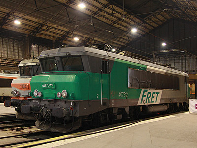
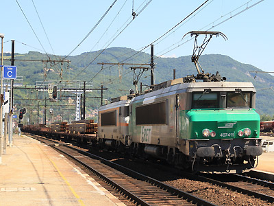
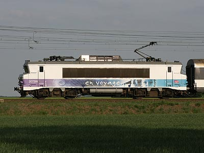

BB 7200
Les hacheuses d'ampères
La génèse des hacheurs de courant
Jusqu'au début des années 1970, il n'y avait pas 36 façons de démarrer une locomotive à courant continu. Afin d'alimenter les moteurs avec une tension faible, ils étaient branchés en série sur un pont de résistances appelé le rhéostat. Les résistances étaient éliminées les unes après les autres à mesure que les moteurs accéléraient et que leur tension contre-électromotrice augmentait. Ce système présente de lourds inconvénients. Une telle chaine de traction tire autant de courant à la caténaire qu'il en passe par les moteurs. Outre des problèmes d'échauffement des pantographes, de la caténaire et une chute de tension importante de celle-ci, la majorité de la puissance consommée au décollage est dissipée en chaleur par le rhéostat. Non seulement il s'agit d'un gâchis mais le rhéostat peut s'échauffer jusqu'à la fusion. Ce qui rend son usage strictement réservé à la mise en vitesse de la locomotive sur des laps de temps courts. La souplesse de conduite s'en ressent beaucoup.
L'apport des semi-conducteurs dans les chaînes de traction à courant continu était donc très prometteur. Mais les hacheurs de courant étaient également délicats à mettre au point. En raison des fréquences harmoniques qu'ils émettaient dans la caténaire et les rails, risquant de perturber la signalisation. Ainsi les thyristors furent utilisés d'abord sur des machines monophasées, les BB 15000 (câblage en pont mixte).
Les hacheurs furent expérimentés en conditions réelles en 1971 sur la CC 20002, ex-prototype bicourant de Savoie. Elle était démotorisée et alimentait les moteurs de la BB 9252. Ces essais se poursuivirent par l'intégration de l'équipement dans une machine unique. La BB 15007 fut transformée en BB 7003. Ce prototype finalisa l'étude d'intégration d'une chaîne de traction à hacheurs de courant dans une machine et effectua de longs essais d'endurance. La BB 7003 s'est aussi illustrée par des essais de carénage visant à inverser l'inclinaison du pare-brise. Les BB 7200 et 22200 ont conservé néanmoins le profil à "nez cassés" de leurs cousines. Il faudra attendre les BB 26000 pour remettre en cause cette architecture.
Construction des BB 7200
Les BB 7200 sont directement issues de la 7003. Elles possèdent une caisse et des bogies similaires aux BB 15000. Toutefois, les persiennes inox sont centrées et le schéma de peinture est simplifié en n'adoptant que trois coloris. Cette livrée sera surnommée "béton". Les premières 7200 sont commandées en 1974 en même temps que leur déclinaison bicourante, les BB 22200, qui sont leur quasi-jumelles. A l'origine, toutes les BB 7200 commandées ont des moteurs auto-ventilés et un rapport de réduction leur permettant une vitesse limite théorique de 180 km/h, limitée réglementairement à 160 km/h.
Les machines de présérie sont livrées à l'été 1976 (BB 7201 et 7202) et entamment des campagnes de tests. Des soucis d'interférences entre le fonctionnement des hacheurs de courant et les systèmes de signalisation, les convertisseurs statiques des voitures Corail et les sous-stations électriques (Le courant continu fournit n'est pas parfait mais parasité par une composante à 50 Hz issue du courant redressé), sont réglés par l'amélioration des filtres de la chaîne de traction. Les tests de charges admissibles révèlent aussi un échauffement excessif des moteurs. La cause est d'une part que l'auto-ventilation est logiquement moins efficace à 100 km/h qu'à 160 km/h. Mais aussi parce que ces machines conçues pour développer 4000 kW en régime continu peuvent, sur des temps assez courts, monter à 5700 kW. Dans une rampe, cet effort exceptionnel est maintenu plus longtemps pour hisser un train de marchandises. Dans un premier temps, les tonnages admissibles sont abaissés et les 7200 se consacrent davantage aux rapides et express. Deux solutions seront toutefois explorées. Les 7203 à 7235 sont mises en service entre Novembre 1976 et Mai 1977.
Dès le début de 1977, un réducteur limitant la vitesse maximale à 100 km/h (Couple PV) est testé sur la BB 22201. Les BB 7003 et 7201 sont aussi équipées. Parallèlement, les essais menés au Pays-Bas conduisent à mettre au point une ventilation forcée et un convertisseur auxiliaire plus puissant pour alimenter les groupes ventilateurs. La ventilation forcée est appliquée en série à partir du printemps 1978 sur des BB 22200, puis sur la seconde sous-série de 7200 dont la production démarre dans la foulée. Les locomotives 7236 et suivantes bénéficient également de pare-brise moins inclinés offrant plus de place en cabine.
Dans la perspective de mise en service du TGV Sud-Est, il est prévu de redéployer les 7200-22200 sur le Fret. Comme les soucis d'échauffement restent rédhibitoires, il est décidé de spécialiser les machines de la première sous-série avec le réducteur PV déjà testé. L'opération d'échange se fait en chaîne spéciale à Oullins. Trente-quatre jeux de bogies sont échangés sous les BB 7201 à 7235 de la fin 1978 à 1979, c'est à dire l'ensemble des machines à petites cabines sauf la 7209, détruite dans un accident en juin 1978. La même opération est menée sur les BB 22201 à 22268 mais ne donne pas satisfaction, si bien que deux ans plus tard, ces soixante-huit jeux de bogies sont à nouveau échangés, cette fois sous des BB 7200 neuves et aptes à la marche en UM (Unité multiple) : les 7343 à 7380 (en 1982) et 7411 à 7440 (entre 1984 et 1985).
240 exemplaires ont été produits de 1976 à 1985.
Evolution des BB 7200
Plusieurs machines furent équipées de tampons hydrauliques leur permettant de tirer des rames Talgo III. Les BB 7269 à 7280 puis, les 7281 à 7299. Les relations noturnes entre l'Espagne et Paris étant reprises par des rames Talgo Pendular, le nombre de machines équipées diminua pour ne plus comporter que les 7292 à 7299, bien suffisantes pour l'unique relation du Catalan Talgo.
Trois machines étaient aptes à la vitesse limite de 200 km/h (7261 à 63). Les bogies à couple 200 provenant des BB 22351 à 22360.
A partir de 2007, 23 locomotives ont été équipées d'un automate pour la conduite en réversibilité par multiplexage. 20 machines sont en service au TER Bourgogne, notamment pour remplacer les quatre BB 9700 au crochet des V2N. Mais la plupart de ces machines, ainsi que les trois autres qui roulent au service TER PACA, sont utilisées avec de nouvelles rames bloc Corail réversibles crées par la transformation d'anciennes mixte-fourgons B6Du et B6Dd2u en voitures pilote B5uxh.
Jusqu'en 2011, 100 machines disposaient d'un rapport de réduction PV (102 même en comptant les 7210 et 7348 victimes d'incendies respectivement en 2001 et 2006). 67 de ces dernières possèdent également l'UM par multiplexage et les 30 dernières le freinage par récupération, très utile dans les pentes de la Maurienne. La purge des plus anciennes machines Fret a alors touché la première sous-série de BB 7200 à petites cabines. Sur les 33 machines restantes, 20 furent transférées aux activités régionales et Intercités avec échanges des bogies, ventilation et convertisseurs. Les 20 jeux de bogies PV prenant place sous des BB 7200 Fret grandes cabines. La BB 7220 fut radiée suite à la collision avec le chargement mal arrimé d'un train croiseur. La BB 7212, conservant ses bogies PV fut mutée à CIC pour effectuer les remises entre Austerlitz et Ivry ou entre Paris-Lyon et Villeneuve. Les 11 autres machines ont été amorties en bloc en 2011.
Les trois locomotives à couple 200 assuraient souvent les Trenhotel Elipsos reliant Paris à Madrid et Barcelone en Talgo IV. Ces rames légères ne pénalisaient pas leur couple plus modeste que les machines à couple 160. Ce sous-parc fut dissous en 2012 avec la radiation des BB 7261 à 7263. Elles totalisaient chacune environ 9 millions de kilomètres.
14 machines sont modifiées pour assurer des Transilien sur le réseau Montparnasse. Afin d'éviter une confusion avec les BB 27300, elles ont été renumérotées BB 7600.
En 2015, Fret a poursuivi la purge de son parc en radiant les machines qui présentaient des devis de remise en état trop élevés. Huit machines PV supplémentaires sont désormais affectées aux remises de matériel voyageur.
Les livrées
L'ensemble de la série a reçu la livrée béton. Mis à part quelques exceptions notables, la livrée n'a pas changé hormis une évolution des teintes, des sigles SNCF, ainsi que la dépose des plaques en relief et le masquage des numéros frontaux.
Les machines les plus récentes (~7390 à 7440) sont les dernières à posséder leurs livrées d'origine et leurs plaques.
Jusqu'en 2005, peu d'engins dérogaient à la livrée béton. Suite à des accidents ou des opérations caisse, quelques machines ont revêtu les livrées Multiservice (7201, 221, 258, 292), Fret (7206, 219, 223, 242, 396, 400, 411) ou "en voyage" (7284).
Depuis, la livrée "En voyage" a été appliquée sur les machines CIC/TER passant en révision et recevant un équipement de réversibilité. Les machines Bourgogne possèdent en plus un grand logo du conseil régional. La BB 7321, affectée à la région Bourgogne en a reçu la livrée spécifique avec les deux nez peints en rouge et jaune comme sur les automoteurs de cette région.
En 2010, avec le coup d'arrêt de la livrée "En voyage" pour des problèmes de droits d'image, les 7216 et 7219 sont sorties d'atelier dans une livrée "fantôme" uniformément grise métalisée semblable à celle des premières machines "En voyage" jusqu'à l'application de leur pelliculage. Depuis, cette livrée a été légèrement modifiée par la pose de stickers sur les visages des modèles. Mais de nombreuses locomotives restent gris métallisé.
La livrée Carmillon n'a pas été apposée, sans doute à cause du profil compliqué des machines à "nez cassés".
Quelques données techniques
Constructeur : Alsthom - Francorail
Tension d'alimentation : Continu 1,5 kV
Chaîne de traction : Hacheur de courant à Thyristors - Moteurs continus
Motorisation : 1 moteur TAB 674 par bogie
Puissance totale : 4040 kW
Vitesse limite : 100, 160 ou 200 km/h
Etat de 1985 à 2009 :
100 km/h : 7201 à 35, 7343 à 80, 7411 à 40
160 km/h : 7236 à 260, 264 à 342, 381 à 410
200 km/h : 7261 à 63 (bogies échangés dans les années 1990)
Des échanges de bogies ont eu lieu depuis. La répartition depuis 2011 est :
Machine à petites cabines PV (100) : 7212
Machines à petites cabines GV (160) : 7201, 02, 03, 04, 05, 06, 08, 11, 13, 14, 15, 16, 17, 18, 19, 21, 23, 29, 30, 35.
Machines à grandes cabines PV (100) : 7343 à 7380 (UM), 7411 à 7440 (UM et frein à récupération), 7307, 13, 28, 29, 33, 34, 36, 81, 82, 83, 84, 85, 86, 87, 89, 92, 95, 7401, 03, 06
Machines à grandes cabines GV (200) : 7261, 62, 63
Les autres machines à grandes cabines ont un couple 180 et une vitesse limite de 160 km/h
Réversibilité Mux BB 7200R : 7236 à 41, 43 à 49, 90, 91, 7319 à 23, 40, 7409, 10.
Transformées en BB 7600 (BB 7200RC) : 7311, 12, 14, 25 à 27, 30 à 32, 35, 37, 39, 41, 42
Longueur : 17,480 m
Masse : 84t
Pantographes : 2 x AM 18 B
Cas particuliers : Unité multiple : 7343 à 380, 7411 à 7440
Frein à récupération : 7411 à 7440
Pour plus d'info :
La fiche BB 7200 sur Wikipedia
Fiche technique des BB 7200 de Florent Brisou
Les BB 7200 sur Trains d'Europe.
l'inventaire des BB 7200 sur Trains du Sud-Ouest
L'explication détaillée de la chaîne
de traction des BB 7200 sur le site de Belphégor (archive).
La BB 7382 à Toulouse possède encore ses plaques (13/07/2003)
Apte à la remorque des Talgo III, la BB 7297 a des tampons rouges
(Montpellier, 18/05/2003)
La BB 7392 béton, logo Desgrippes, sur le triage de Villeneuve (16/03/2003)
La 7201 en Multiservice à Grésine (05/12/2004). Cette machine est aujourd'hui TER, En Voyage et limitée à 160 km/h.
La 7258 en Multiservice à Marseille (16/07/2005)
La 7292 en Multiservice gris orage à Tours (26/12/2004)

La 7212 à Paris Austerlitz. Cette machine PV assure des remontes de
rames vides depuis Masséna (01/01/2015)
La 7396 aux portes ouvertes des ateliers d'Oullins (15/05/2004)
La 7435 mène une UM de BB 7200 PV. Grésine (05/12/2004)

La 7411, blasonnée Lamure-sur-Azergues et unique machine UM en livrée Fret, mène la BB 7421. La 7411 est radiée en mai 2017 (Ambérieu, 03/07/2011)
La 7262, une des trois machines V200, était souvent dédiée à la traction des légers Talgo (Ste Geneviève des Bois, 05/05/2010)

La 7391 à Toury (22/05/2010)
La 7322 réversible, en livrée "En Voyage" Bourgogne, succède aux BB 9700 avc une rame V2N à Paris-gare de Lyon (31/05/2012)
La 7237 réversible, en livrée "En Voyage" Bourgogne (24/07/2011)
La 7321 tire une rame réversible Corail TER Bourgogne. Malain (14/05/2010)

La 7219, en livrée "fantôme". Montlouis sur Loire (23/05/2010)